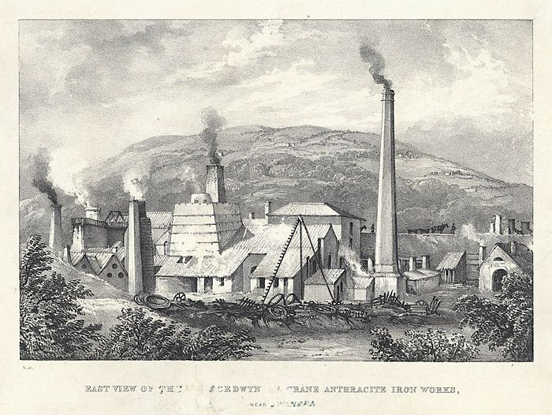

The Giant: Cedwyn Gawr¶
LEGEND This is a traditional story. It is told here as the manuscript tells it, with its source.
The manuscript¶
Around 1600 the physician and grammarian John David Rhys (Siôn Dafydd Rhys, d. 1617) wrote down a list of the giants of Wales and the places named after them. It survives in Peniarth MS 118, folios 829–837, at the National Library of Wales. Hugh Owen printed the text with an English translation in Y Cymmrodor, vol. 27 (1917), pp. 115–152, with a facsimile of folio 835 facing p. 142. Owen notes that the giants in the list dwell on a moel, in a caer, a bwlch, a llwyn, a cwrt, a garth, or “an ynys (Cedwyn)”.
The story¶
Folio 835 tells of Cribwr, a giant whose name survives in Cribarth, and of three giant sisters whom Arthur killed one by one, “by stealth”, because “no one could kill the three sisters together, so great was their strength”. Opposite Cribwr lived Oyle Gawr, at Pen Oyle. Then:
“And in the same parish in a place still called Ynys Cedwyn there was another giant called Cedwyn Gawr, and these three lived in Arthur’s time. And the first two were killed by Arthur.”
—Peniarth MS 118, fo. 835, trans. Hugh Owen, Y Cymmrodor 27 (1917)
The Welsh reads: “Ac mywn lhe yn yr un plwybh a elwir etto ynys Cedwyn ydh oedh cawr aralh a elwid Cedwyn gawr, a’r tri hynn a oedhynt yn amser Arthur. A’r dhau gyntabh a gawsant eu lhadh gan Arthur.” So of the three, Cedwyn Gawr is the one the manuscript does not have Arthur kill.
Where the giant lived¶

“East view of the Yniscedwyn crane anthracite iron works, near Swansea”, lithograph by William Gauci (19th century). Public domain, via Wikimedia Commons. Ynyscedwyn, the giant’s ynys, later gave its name to the ironworks.¶
CORROBORATED Owen’s note places Ynys Cedwyn as “a township in N. Glamorgan, near the junction of the Tawe and Twrch, and 13 miles N.E. Swansea”. Baring-Gould and Fisher (1908) give the same place: “The Cedwyn of Ynys Cedwyn in North Glamorgan, near the junction of the Twrch with the Tawe, is said to have been a giant”, citing Peniarth MS 118. The List of Historic Place Names records Ynyscedwyn at SN 77913 09540, Ystradgynlais Lower, from c. 1814–20.
What links the giant to Llandough¶
INFERENCE The link is the name. No source found for this edition places a giant at Leckwith, Llandough or Tŷ Mawr. The giant’s ynys lies in the upper Swansea valley, about 33 miles (53 km) north-west of the farm by grid reference. Baring-Gould and Fisher list Cwm Cedwyn on the Ely and Ynys Cedwyn on the Tawe in the same entry, under the saint, which is how the two come to be read together.
INFERENCE A Herbert thread runs through both places, although it proves nothing about the legend. The 1547 lease of Cydwin was granted by Sir George Herbert of Swansea; Ynyscedwyn lay in Swansea’s hinterland; and in 1729 a Chancery bill names Richard Portrey of “Ynys Kedwin, Breconshire” as administrator of Morgan Aubrey, late of Ynys Kedwin (The National Archives C 11/1779/32). The spelling “Kedwin” for the same name is worth noting beside “Ked Fen”.